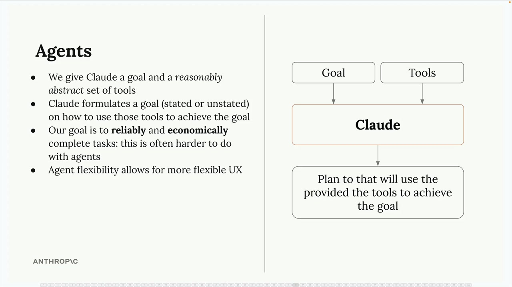
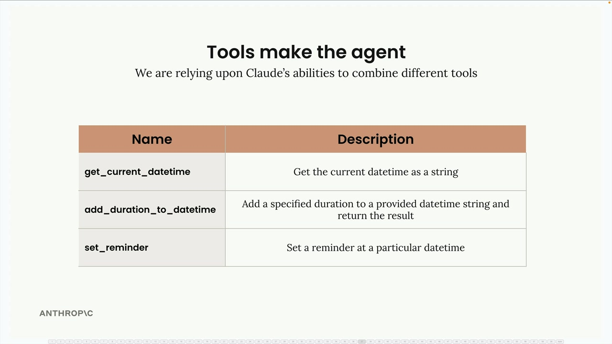
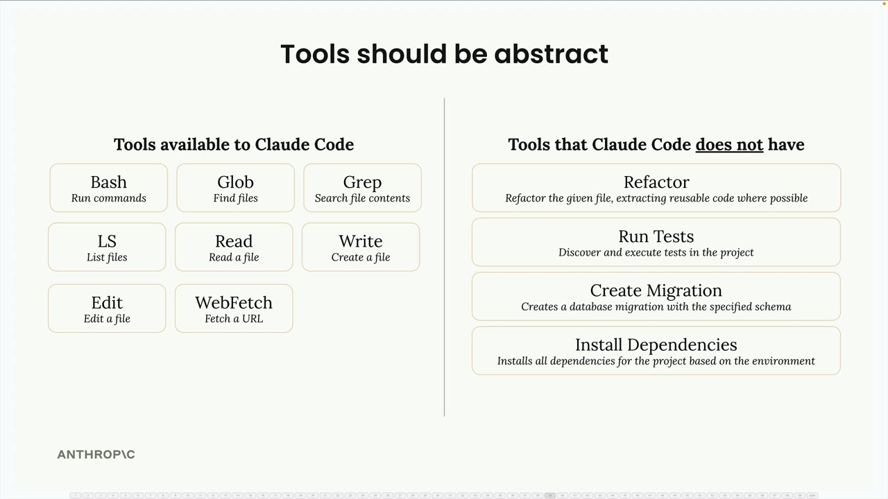
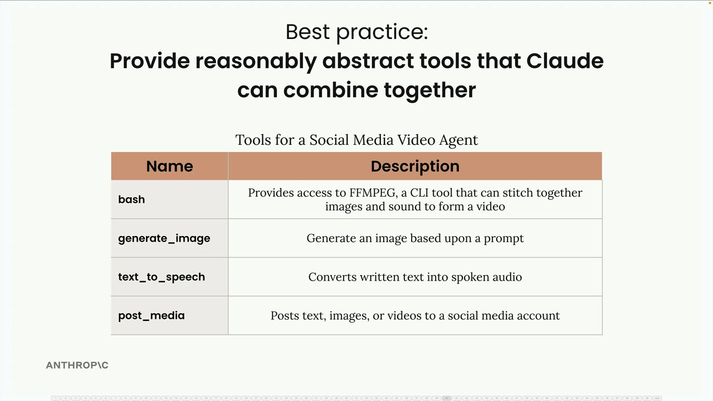
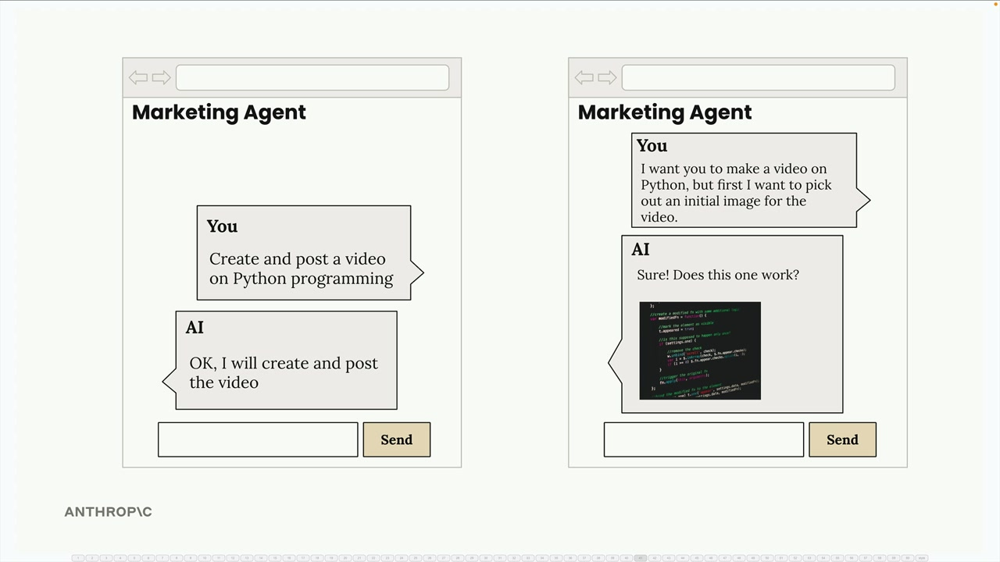

에이전트와 도구
에이전트는 우리가 지금까지 다뤄온 구조화된 워크플로우에서 한 단계 더 나아간 개념입니다. 워크플로우는 작업을 완료하는 데 필요한 단계를 정확히 알고 있을 때 적합하지만, 에이전트는 그 단계가 무엇인지 불분명할 때 진가를 발휘합니다. 고정된 순서를 정의하는 대신, Claude에게 목표와 도구 세트를 제공하고 이 도구들을 어떻게 조합할지 스스로 판단하도록 맡깁니다.

이러한 유연성 덕분에 에이전트는 다양하고 예측하기 어려운 작업을 처리해야 하는 애플리케이션을 구축할 때 매력적인 선택지가 됩니다. 에이전트를 한 번 만들어 적절히 작동하도록 설정해두면, 광범위한 문제를 해결하는 데 활용할 수 있습니다. 다만 이 유연성에는 신뢰성과 비용 면에서의 트레이드오프가 따르는데, 이는 나중에 자세히 살펴보겠습니다.
도구가 에이전트를 만드는 방법
에이전트의 진정한 강점은 단순한 도구들을 예상치 못한 방식으로 조합하는 능력에 있습니다. 다음과 같은 기본적인 날짜/시간 도구 세트를 예로 들어 보겠습니다:

-
get_current_datetime- 현재 날짜와 시간을 가져옵니다 -
add_duration_to_datetime- 주어진 날짜에 시간을 더합니다 -
set_reminder- 특정 시간에 대한 알림을 생성합니다
이 도구들은 개별적으로는 단순해 보이지만, Claude는 이것들을 연결하여 놀라울 정도로 복잡한 요청을 처리할 수 있습니다:

"지금 몇 시야?"라고 물으면 Claude는 단순히 get_current_datetime을 호출합니다. 하지만 "11일 후는 무슨 요일이야?"라고 물으면 get_current_datetime에 이어 add_duration_to_datetime을 연결해서 사용합니다. 다음 주 수요일에 헬스장 알림을 설정하려면 세 가지 도구를 모두 순서대로 활용할 수 있습니다.
Claude는 추가 정보가 필요한 경우도 스스로 파악할 수 있습니다. "내 90일 품질 보증 기간이 언제 끝나?"라고 물으면, 만료일을 계산하기 전에 구매 날짜를 먼저 물어볼 줄 압니다.
도구는 추상적이어야 합니다
효과적인 에이전트를 구축하는 핵심 통찰은 지나치게 특화된 도구보다 적절히 추상화된 도구를 제공하는 것입니다. Claude Code는 이 원칙을 완벽하게 보여주는 예시입니다.

Claude Code는 다음과 같은 범용적이고 유연한 도구들을 사용합니다:
-
bash- 임의의 명령 실행 -
read- 임의의 파일 읽기 -
write- 임의의 파일 생성 -
edit- 파일 수정 -
glob- 파일 검색 -
grep- 파일 내용 검색
주목할 점은 "코드 리팩터링"이나 "의존성 설치" 같은 특화된 도구가 없다는 것입니다. 대신 Claude는 기본 도구들을 활용하여 이러한 복잡한 작업을 어떻게 수행할지 스스로 파악합니다. 이러한 추상화 덕분에 개발자들이 명시적으로 계획하지 않은 수많은 프로그래밍 시나리오도 처리할 수 있습니다.
모범 사례: 조합 가능한 도구
에이전트를 설계할 때는 Claude가 창의적으로 조합할 수 있는 도구들을 제공하세요. 예를 들어, 소셜 미디어 영상 에이전트에는 다음과 같은 도구들이 포함될 수 있습니다:

-
bash- 영상 처리를 위한 FFMPEG 접근 -
generate_image- 프롬프트로 이미지 생성 -
text_to_speech- 텍스트를 오디오로 변환 -
post_media- 소셜 플랫폼에 콘텐츠 업로드
이 도구 세트는 단순한 워크플로우(영상 생성 후 게시)부터, 에이전트가 먼저 샘플 이미지를 생성하고 사용자의 승인을 받은 뒤 영상 제작을 진행하는 보다 인터랙티브한 경험까지 모두 가능하게 합니다.

에이전트는 사용자의 피드백과 선호도에 따라 접근 방식을 조정할 수 있습니다. 이는 고정된 워크플로우로는 달성하기 어려운 것입니다. 바로 이 유연성이 에이전트를 동적이고 사용자 반응형 애플리케이션 구축에 강력한 도구로 만드는 이유입니다.